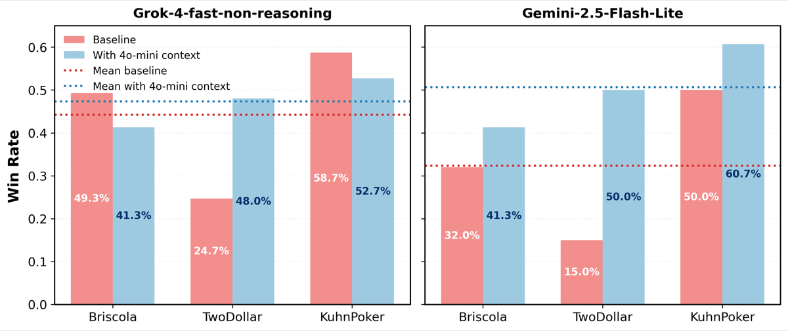

Why it matters왜 중요한가
In path-dependent games, the bottleneck is not the model — it's that the same model behaves differently every run.
경로 의존적 게임에서 병목은 모델이 아니라, 같은 모델이 실행마다 다르게 행동한다는 점이다.
As LLMs saturate static benchmarks, evaluation is shifting to multi-turn, multi-agent games that demand long-horizon planning, negotiation, and bluffing. But these settings are high-variance: small early deviations compound, one agent's inconsistency perturbs others, and stochastic decoding flips comparative rankings. Existing fixes fall short — static prompting (CoT/ToT) can't adapt, automatic prompt optimization has no persistent memory and re-searches every run, and RL needs huge sample budgets and is unstable under sparse end-game rewards. MEMO reframes the inference-time context as the optimizable, memory-bearing object, so insights accumulate instead of being thrown away.
LLM이 정적 벤치마크를 포화시키면서, 평가는 장기 계획·협상·블러핑이 필요한 다중 턴·다중 에이전트 게임으로 옮겨가고 있다. 그러나 이 환경은 분산이 크다: 초반 편차가 누적되고, 한 에이전트의 비일관성이 다른 에이전트를 교란하며, 확률적 디코딩이 비교 순위를 뒤집는다. 기존 해법은 부족하다 — 정적 프롬프트(CoT/ToT)는 적응 못 하고, 자동 프롬프트 최적화는 영속 메모리가 없어 매 실행마다 다시 탐색하며, RL은 막대한 샘플 예산이 필요하고 희소 보상에서 불안정하다. MEMO는 추론 시점 컨텍스트를 최적화 가능하고 기억을 담는 객체로 재정의해, 통찰이 버려지지 않고 축적되게 한다.

By the numbers핵심 숫자
(GPT-4o-mini)평균 승률
(GPT-4o-mini)
(Qwen-2.5-7B)평균 승률
(Qwen-2.5-7B)
RSE (GPT-4o-mini)실행 간 분산
RSE (GPT-4o-mini)
(2,000 vs 38,000)RL 대비 게임 수
(2,000 vs 38,000)
(91K vs 354K)출력 토큰(MIPRO 대비)
(91K vs 354K)
(TextArena · SPIN-Bench)게임 · 2개 기반 모델
(TextArena · SPIN-Bench)
Results — ablating MEMO's parts결과 — MEMO 구성요소 분해
| Configuration | Win rate | Δ |
|---|---|---|
| Prompt optimization only | 23.8% | — |
| + Tournament (exploration only) | 27.1% | +3.3 |
| + Memory only (retention) | 34.2% | +10.4 |
| + Tournament + Memory | 48.1% | +24.3 |
| + Prioritized Replay (full MEMO) | 50.2% | +26.4 |
In one diagram한 장의 그림
Idea: context as a memory-bearing, optimizable object아이디어: 기억을 담는 최적화 객체로서의 컨텍스트
Persistent Memory Bank
After each generation, the LLM reflects over sampled trajectories and extracts typed insights (rule clarifications, legality constraints, strategic priors). These merge into a shared bank via add / edit / remove operations, so knowledge grows and self-corrects across generations instead of being discarded.
각 세대 후, LLM은 샘플된 궤적을 반성하며 유형화된 통찰(규칙 명확화, 합법성 제약, 전략적 사전지식)을 추출한다. 이는 추가 / 수정 / 삭제 연산으로 공유 뱅크에 병합되어, 지식이 버려지지 않고 세대를 거쳐 성장·자기수정된다.
Tournament + Prioritized Replay
Candidate contexts compete in self-play; TrueSkill rates each by a conservative lower bound μ−κσ to reward reliable wins, not lucky ones. A replay buffer revisits rare or decisive states via inverse-frequency priority, feeding the memory high-signal, transferable lessons.
후보 컨텍스트들이 자기대국으로 경쟁하고, TrueSkill이 보수적 하한 μ−κσ로 각각을 평가해 운이 아닌 안정적 승리를 보상한다. 재현 버퍼는 역빈도 우선순위로 드물거나 결정적인 상태를 다시 방문해, 신호가 강하고 전이 가능한 교훈을 메모리에 공급한다.
How it works어떻게 작동하나
- Run a self-play tournament자기대국 토너먼트 실행Maintain N=8 candidate contexts (prompt + memory subset). Evaluate each in self-play vs. a default-prompt baseline, swapping roles to remove first-move bias.N=8개 후보 컨텍스트(프롬프트 + 메모리 부분집합)를 유지하고, 기본 프롬프트 baseline과의 자기대국으로 평가하되 선공 편향 제거를 위해 역할을 교대한다.
- Rate with TrueSkill, keep the robust onesTrueSkill로 평가, 견고한 것만 유지Score each context by S(c)=μ−κσ (κ=1) so high-uncertainty winners are penalized; discard low scorers and keep a persistent pool of the best.각 컨텍스트를 S(c)=μ−κσ(κ=1)로 채점해 불확실성 큰 승자에 페널티를 주고, 저득점은 버리고 최고들을 영속 풀에 유지한다.
- Reflect and update the memory bank반성하고 메모리 뱅크 갱신Sample completed trajectories, distill typed insights, and merge them into B_mem via add/edit/remove to refine and self-correct accumulated knowledge.완료된 궤적을 샘플링해 유형화된 통찰을 정제하고, add/edit/remove로 B_mem에 병합하여 축적 지식을 정제·자기수정한다.
- Repopulate next generation + replay다음 세대 재구성 + 재현Refill to N via random + memory-augmented proposals (π=0.75 carry memory), and with gate β=0.4 start some games from prioritized rare prefixes. After G=5 generations (~2,000 games), output the top context.무작위 + 메모리 증강 제안으로 N개로 채우고(π=0.75는 메모리 운반), 게이트 β=0.4로 일부 게임을 우선순위 높은 드문 접두에서 시작한다. G=5세대(~2,000게임) 후 최상위 컨텍스트를 출력한다.
What to take away그래서, 가져갈 것
Memory beats retraining here. ~2× mean win rate and a 7× drop in run-to-run variance — without a single weight update, and with ~19× fewer games than RL.
여기선 기억이 재학습을 이긴다. 가중치 갱신 없이, RL 대비 ~19배 적은 게임으로 평균 승률 약 2배·실행 간 분산 7배 감소.
Persistence is the lever. Memory-only (+10.4%) dwarfs exploration-only (+3.3%); the win comes from not throwing insights away, which is exactly what prior prompt optimizers do.
핵심 지렛대는 영속성. 메모리 단독(+10.4%)이 탐색 단독(+3.3%)을 압도 — 승부는 통찰을 버리지 않는 데서 나며, 이는 기존 프롬프트 최적화가 못 하던 점이다.
Stable evaluation is a result, not just a means. Cutting RSE to 6.4% makes model rankings reproducible — useful for the whole field, not just MEMO.
안정적 평가는 수단이 아니라 결과. RSE를 6.4%로 줄이면 모델 순위가 재현 가능해진다 — MEMO만이 아니라 분야 전체에 유용하다.
Transfer is conditional. Learned context helps weaker models broadly but can hurt a stronger model where it's already good — heuristics interfere.
전이는 조건부. 학습된 컨텍스트는 약한 모델을 폭넓게 돕지만, 이미 잘하는 강한 모델에선 해가 될 수 있다 — 휴리스틱이 간섭한다.